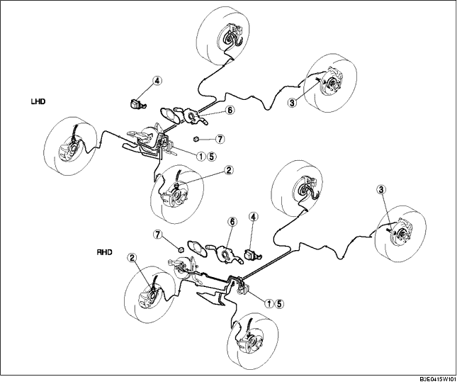

.
|
1
|
DSC HU/CM
(Siehe FAHRDYNAMIKREGELUNG PRÜFEN.)
(Siehe DSC-HYDRAULIK-/STEUERMODUL PRÜFEN.)
|
|
2
|
Vorderrad-Drehzahlsensor
(Siehe ABS-VORDERRAD-DREHZAHLSENSOR PRÜFEN.)
|
|
3
|
Hinterrad-Drehzahlsensor
(Siehe HINTEREN ABS-DREHZAHLSENSOR PRÜFEN.)
|
|
4
|
Kombinationssensor
(Siehe KOMBINATIONSSENSOR AUSBAUEN/EINBAUEN.)
(Siehe KOMBINATIONSSENSOR PRÜFEN.)
(Siehe KOMBINATIONSSENSOR INITIALISIEREN.)
|
|
5
|
Bremsflüssigkeitsdruckgeber (Integriert in DSC-Hydraulik-/Steuermodul)
(Siehe BREMSFLÜSSIGKEITSDRUCKGEBER PRÜFEN.)
|
|
6
|
Lenkwinkelsensor
(Siehe LENKWINKELSENSOR AUSBAUEN/EINBAUEN.)
(Siehe LENKWINKELSENSOR PRÜFEN.)
|
|
7
|
DSC OFF-Schalter
(Siehe DSC OFF-SCHALTER PRÜFEN.)
(Siehe DSC OFF-SCHALTER AUSBAUEN/EINBAUEN.)
|